WordPress 可能是比较好用的博客系统了，当然改一下做个非博客应该也可以。当然是需要服务器的，想我这种用 Hexo 配合 GitHub Page 当然是用不起的了，不过前段时间帮朋友搞了一下，就在这里记录一下过程了
准备
选择服务器
首先服务器用的是阿里云的轻量应用服务器，因为比较便宜，点击这里可以查看价格和配置。当然这里就不测试了，因为价格在这里摆着，还要什么自行车。
下载 WordPress 文件
访问https://cn.wordpress.org/download/
然后点击
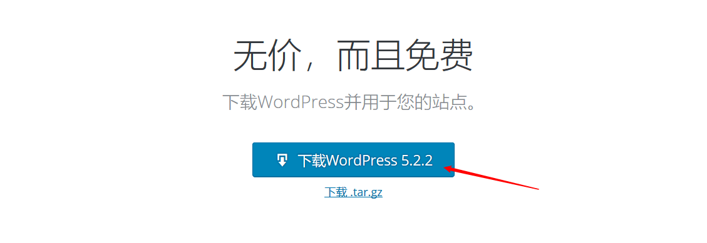
下载到你能方便找到的地方就好了
系统和面板
然后我选择的是 CentOS 然后装的宝塔面板，点击查看宝塔的面板，免费版也够用
SSH到服务器
开启端口
看这个页面即可https://www.bt.cn/bbs/thread-19376-1-1.html
推荐打开所有端口，因为宝塔面板也有防火墙
SSH 配置
首先要到轻量应用服务器的控制面板然后点击你的服务器
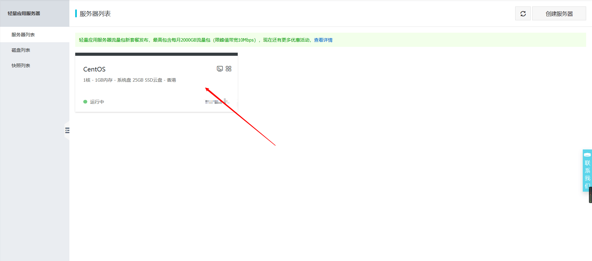
点进去后再转到远程连接
选择这里任何一种都可以，没有任何影响
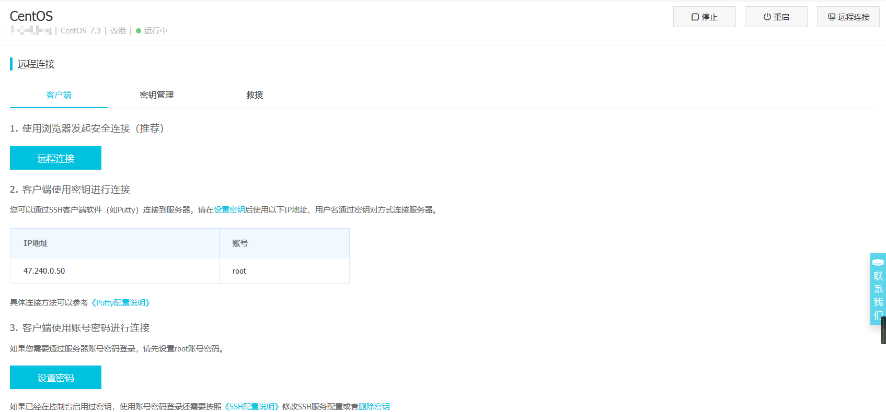
那么我这里是用的第三种，也就是用账号密码来连接。
SSH 客户端
因为用账号密码的话，是要用本地客户端连接的，那么这里推荐使用[FinalShell(http://www.hostbuf.com/t/988.html)来连接，国人制作，有免费版本，中文界面，支持 Windows,macOS,Linux
点金网址后选择你系统对应的链接就可以下载了
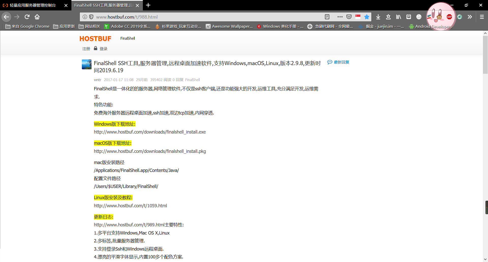
下载安装后打开就可以看到界面了
然后点击这个按钮
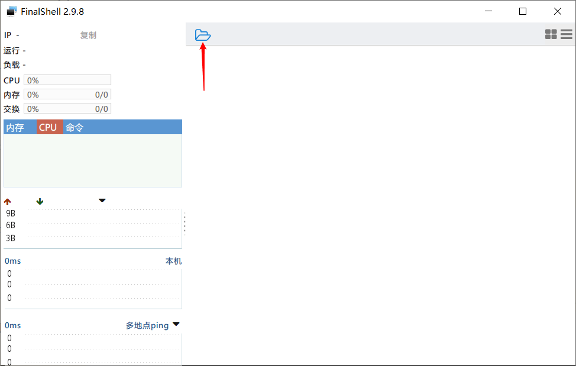
然后点击
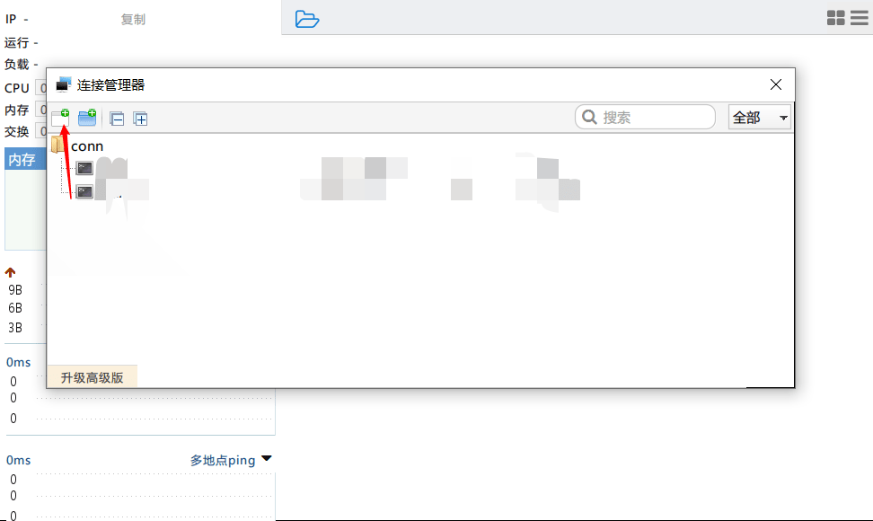
就可以添加一个连接了
在这里输入服务器的名字，ip，用户名，密码，然后保存再双击刚才添加的就可以连接了
安装面板
安装很简单，一行命令就搞定了
1 | yum install -y wget && wget -O install.sh http://download.bt.cn/install/install_6.0.sh && sh install.sh |
如果是 Ubuntu 用这个命令
1 | wget -O install.sh http://download.bt.cn/install/install-ubuntu_6.0.sh && sudo bash install.sh |
Debian 系统的用这个
1 | wget -O install.sh http://download.bt.cn/install/install-ubuntu_6.0.sh && bash install.sh |
Fedora 系统用这个
1 | wget -O install.sh http://download.bt.cn/install/install_6.0.sh && bash install.sh |
怎么样，是不是很简单，后面都是自动化的安装了。当然我只使用过 CentOS，所以下面的还用 CentOS举例
安装完毕后会有一段提示，里面有访问面板的地址和默认的用户名还有密码，当然随后都可以改
登录面板
进入面板登录后会选择安装一些东西，这里推荐使用编译安装，虽然费时间但是很稳定。
现在，喝杯咖啡看看书，或者小睡一会儿，这个过程可能需要3-4个小时
解析域名
现在，你的面板应该已经部署好了，那下一步就是解析域名了，这里假设你已经完成了域名的更改，我使用的是腾讯云提供的解析服务演示，当然阿里云或者其他服务商也会有。
访问https://console.cloud.tencent.com/cns登录腾讯云配置解析
绑定域名
点击添加域名然后输入你的域名，比如输入 ljbaidu.com 当然这个要填你的域名，我只是吐槽一下百度然后点击确定就可以了
配置DNS
添加域名后如果解析状态提示异常的话就可能是 DNS 的问题，需要去注册商哪里讲 DNS 修改为
1 | f1g1ns1.dnspod.net |
然后等待最多72小时就可以了
添加解析
看到这里说明你的 DNS 已经没问题了，现在点击操作栏的解析，进去之后点击上面的添加记录。主机记录选择 @ 这一项就可以了，记录类型选择 A ，记录值填入你的服务器 IP
最后点击保存，稍作等待，这个过程需要十分钟才能生效当然如果你是氪金用户当我没说
正式开始部署 WordPress
添加站点
现在登录你的宝塔面板，在侧边栏找到网站，点击后选择添加站点
然后这样填
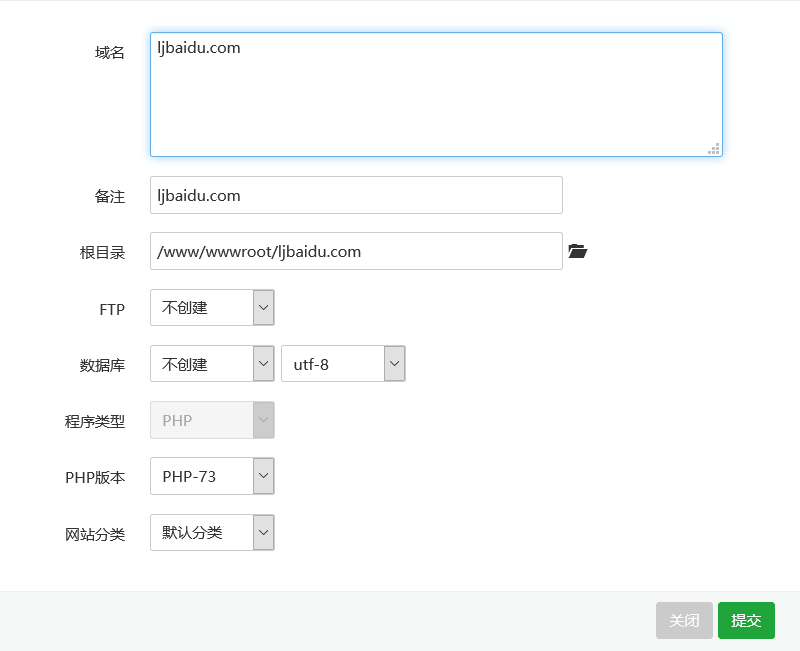
再次声明，ljbaidu.com只是调侃，请填写自己的域名
然后点击提交
添加数据库
然后选择侧边栏的数据库，然后选择添加数据库
填写数据库名称，用户名和密码，选择访问权限然后选择提交，如图(注意看箭头所指的选项)
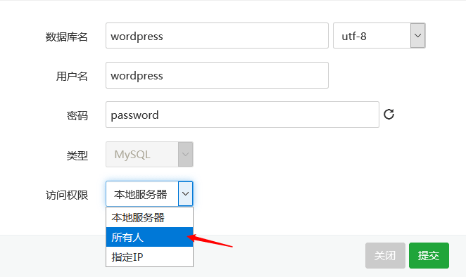
修改 WordPress 配置
解压刚开始下载的 wordpress-5.2.2.zip ，然后解压到一个文件夹中。
找到 wp-config-sample.php 并重命名为 wp-config.php ，然后使用文本编辑器或其他打开 wp-config.php。
找到
1 | // ** MySQL settings - You can get this info from your web host ** // |
修改为
1 | // ** MySQL settings - You can get this info from your web host ** // |
保存文件并退出
返回上一目录，压缩这个文件夹
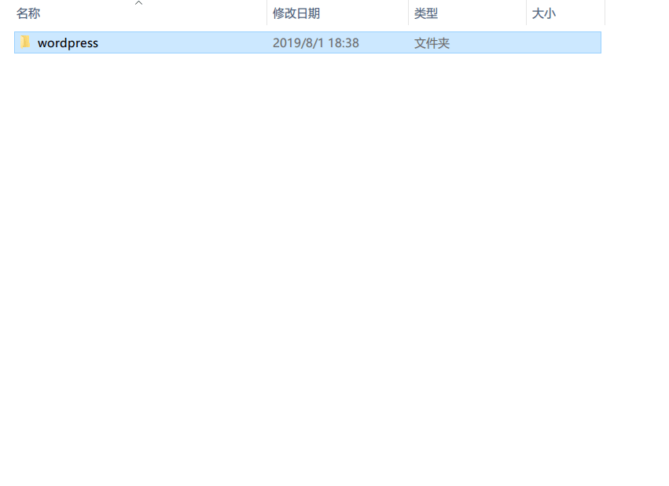
上传 WordPress
打开宝塔面板，选择网站
点击根目录那一栏下面的文字，也就是
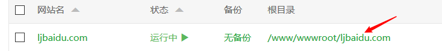
然后选择上传，再点击选择文件，然后找到刚才打包的文件
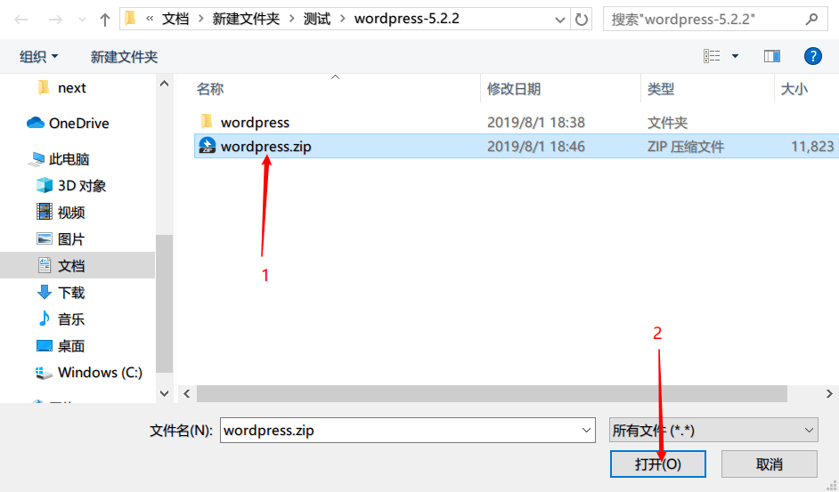
点击开始上传，等待即可
解压
点击这个选项，然后直接确定即可解压
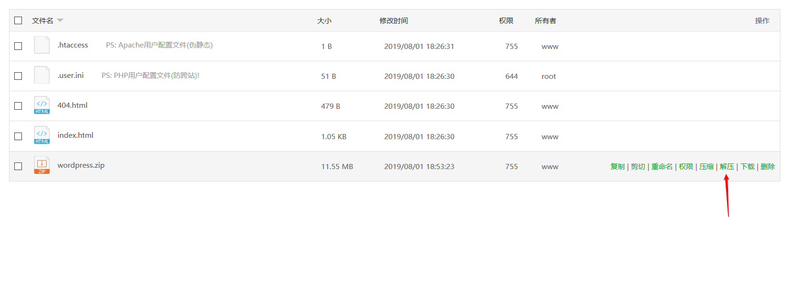
现在访问 你的域名/wp-admin/install.php 就可以开始安装了，比如 http://ljbaidu.com/wp-admin/install.php 再次，我没有这个域名，所以下来用我的域名做演示
访问之后可以看到这个界面
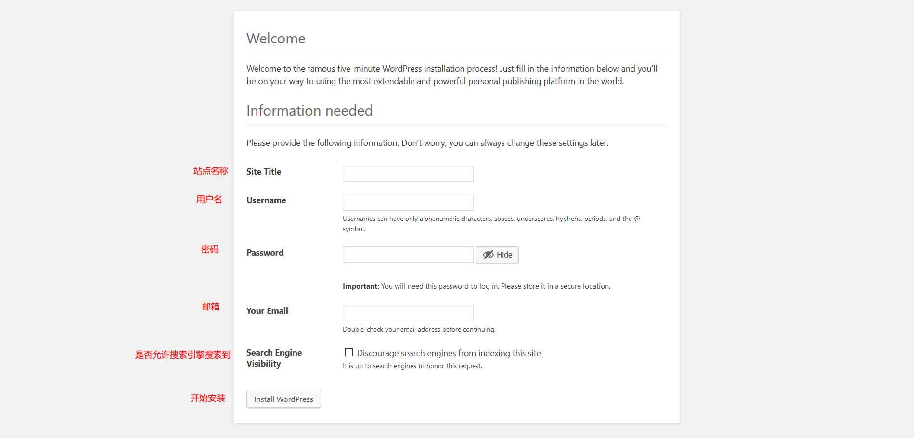
根据图上的注释填写，然后点击就可以安装了
在这里点击Log In
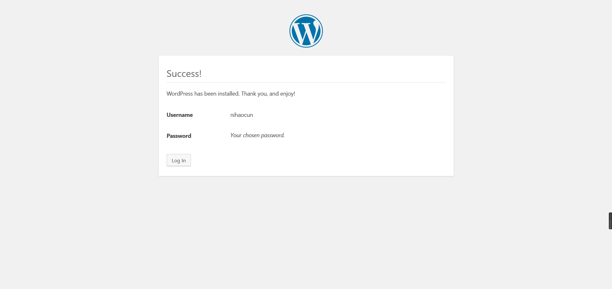
在下一个页面登录即可
结束
至此，所有安装过程已经完成，现在就可以开始使用了
如果在安装过程中有什么问题可以通过博客主页的联系方式联系我，或者在下面留下你的评论